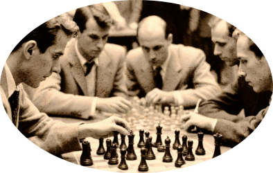
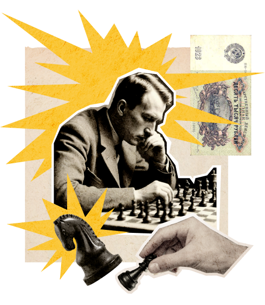
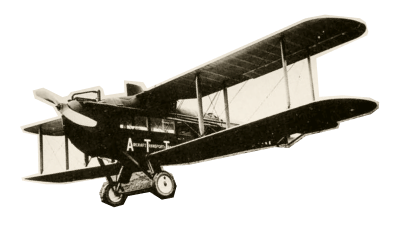

Дело помощи утопающим - дело рук самих утопающих!
Шахматы двигают вперед не только культуру, но и экономику!
Лед тронулся, господа присяжные заседатели!
Чтобы поддержать Международный васюкинский турнир посетите лекцию на тему: «Плодотворная дебютная идея»


и Сеанс одновременной игры в шахматы на 160 досках гроссмейстера О. Бендера
- Место проведения:
- Клуб «Картонажник»
- Дата и время мероприятия:
- 22 июня 1927 г. в 18:00
- Стоимость входных билетов:
- 20 коп.
- Плата за игру:
- 50 коп.
- Взнос на телеграммы:
- 100 руб. 21 руб. 16 коп.
По всем вопросам обращаться в администрацию к К. Михельсону
Этапы преображения Васюков
Будущие источники обогащения васюкинцев
